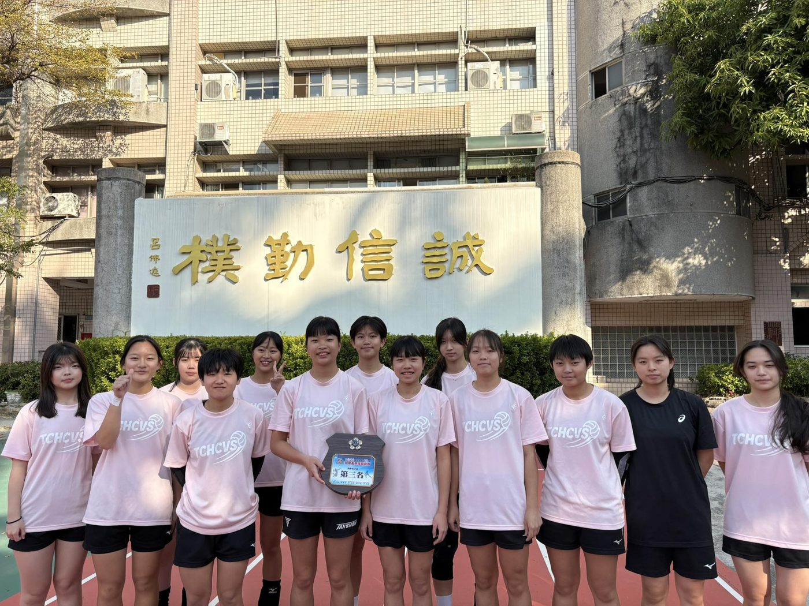
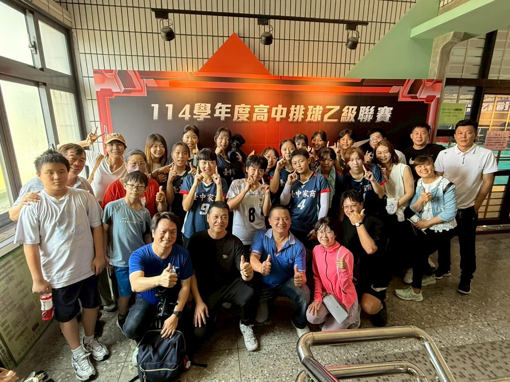
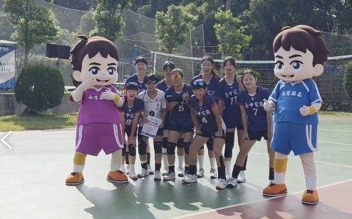

01我的故事
台中家商女子排球隊自2013年成立以來，致力於以運動培養學生的多元能力與健全人格。球隊成員多為憑藉運動表現進入本校的學生，排球不僅是她們的興趣，更是升學與未來發展的重要途徑。
在經費有限的條件下，球員們每天利用放學後的時間進行訓練，從基本動作到戰術配合，皆以高度自律與毅力完成。校內帶隊老師與指導教練在缺乏資源的情況下，仍持續投入心力，不僅犧牲私人時間陪練，甚至自掏腰包支付代課費與相關開銷，只為讓學生能穩定訓練，不因經費短缺而影響發展。
透過長期的努力與團隊合作，球隊近年成績逐步提升，曾獲得第52屆永信盃第七名、第44屆華宗盃第四名、第50屆永信盃第四名，並連續兩年打入排球乙級聯賽16強決賽。這些成果代表的不僅是競技上的突破，更是學生在過程中培養出的抗壓力、團隊精神與持續精進的態度。
我們期望藉由排球運動的訓練，培養學生的身心素質與責任感，並讓她們在未來的升學與人生道路上，都能具備堅定的意志與自信。球隊將持續努力，為學生打造更完善的運動環境，讓她們能安心追求夢想，展現青春最真實的力量。



推薦理由
一、運動教育帶來全面成長
運動不僅培養健康的體魄，更能啟發學生的專注力、記憶力與思考能力。多項研究指出，規律參與體育活動的學生在學業表現、心理韌性及人際互動上皆顯著優於同儕。透過排球訓練過程，學生能學習團隊合作、溝通協調、抗壓與領導等能力，這些都是教室內難以培養的關鍵素養。這樣的運動教育不僅有助於學生個人成長，更能奠定其未來在學業與職涯發展上的基礎。
二、企業支持共創教育與品牌價值
企業（或個人）的贊助不僅能協助球隊獲得穩定資源，使學生持續在學業與運動間並進，也能展現企業關懷教育、培育青少年的社會責任。透過球衣廣告、校園活動及社群媒體的品牌露出，企業形象能與「努力、堅持、團隊」等正向價值連結，達成教育推廣與品牌形象雙贏的合作成果。
三、推動在地體育發展與社會影響力延伸
企業的投入不僅支持學校與球隊的永續發展，更能促進地方體育風氣與社區參與。學生在比賽中展現的堅毅與團隊精神，將成為同儕及社區青年學習的榜樣，帶動更多人關心基層運動發展。企業藉此不僅實踐 ESG 與 CSR 的核心理念，也以實際行動推動教育平等與社會永續，形成長期且正向的社會循環。